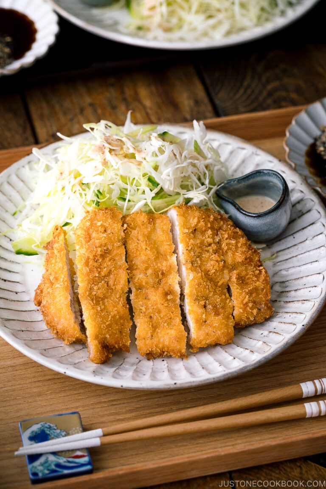

Tonkatsu

Description
Tonkatsu is a beloved japanese dish featuring tender pork loin or fillet, breaded and deep-fried to crunchy perfection. Its name, derived from "ton" meaning pork and "katsu" from "katsuretsu" meaning cutlet, reflects its essence. The dish has a rich history, originating from the adaptation of Western cuisine in Japan during the late 19th century.
What sets Tonkatsu apart from the other cutlets is its unique preperation. Instead of traditional breadcrumbs, it utilizes panko, Japanese-style breadscrumbs that result in a lighter and crispier coating. Deep-frying ensure a crunchy exterior while maintaining a juicy interior, distinguishing it from pan-fried alternatives. A defining feature is the tangy Tonkatsu sauce drizzled atop the cutlet, adding a sweet and savory dimension. Additionally, it's traditionally served with a mound of freshly shredded cabbage, offering a refreshing contrast to the rich flavors.
Tonkatsu embodies the perfect harmony of textures and flavors, making it a staple in Japanese cuisine enjoyed by many for over a century.
Ingredients
- Pork – There are two cuts of meat we typically use for this dish: pork loin (ロース rōsu) or tenderloin/fillet (ヒレ hire). Both cuts are fairly lean, but pork loin has a layer of fat that gives the Tonkatsu an extra tender bite when cooked properly. (As with most recipes, the quality of the meat makes all the difference.)
- Salt and pepper
- Flour
- Panko – Please get a Japanese brand of panko as non-Japanese brand of panko seem a bit different.
- Egg
- Neutral flavored oil for deep frying
- Tonkatsu sauce
- Sesame seeds (optional)
Step-by-step instructions:
-
Prepare the Pork:
- Choose either pork loin (ロース rōsu) or tenderloin/fillet (ヒレ hire) as your meat cut.
- Season the pork with salt and pepper on both sides.
-
Coat the Pork:
- Set up a breading station with three shallow dishes.
- Place flour in the first dish.
- Beat the egg in the second dish.
- Place panko breadcrumbs in the third dish.
-
Bread the Pork:
- Dredge each seasoned pork cutlet in flour, shaking off any excess.
- Dip the floured pork into the beaten egg, ensuring it's coated evenly.
- Press the eggy pork into the panko breadcrumbs, making sure the breadcrumbs adhere to the surface of the meat.
-
Fry the Tonkatsu:
- Heat a generous amount of neutral-flavored oil in a deep frying pan or pot to 350°F (180°C).
- Carefully place the breaded pork cutlets into the hot oil, one or two at a time, depending on the size of your pan.
- Fry the Tonkatsu for about 4-5 minutes on each side, or until they are golden brown and crispy.
- Once done, transfer the Tonkatsu to a plate lined with paper towels to drain excess oil.
-
Serve:
- Slice the Tonkatsu into strips.
- Serve hot with Tonkatsu sauce drizzled on top.
- Optionally, sprinkle sesame seeds over the Tonkatsu for added flavor and texture.
Enjoy your homemade Tonkatsu!
Back to Recipes Page